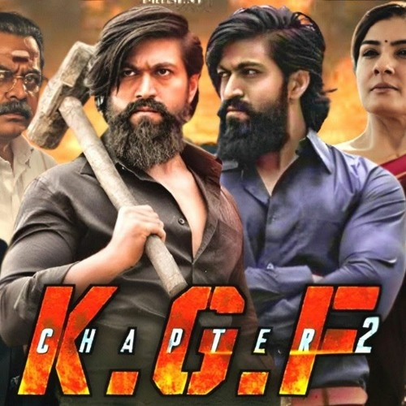
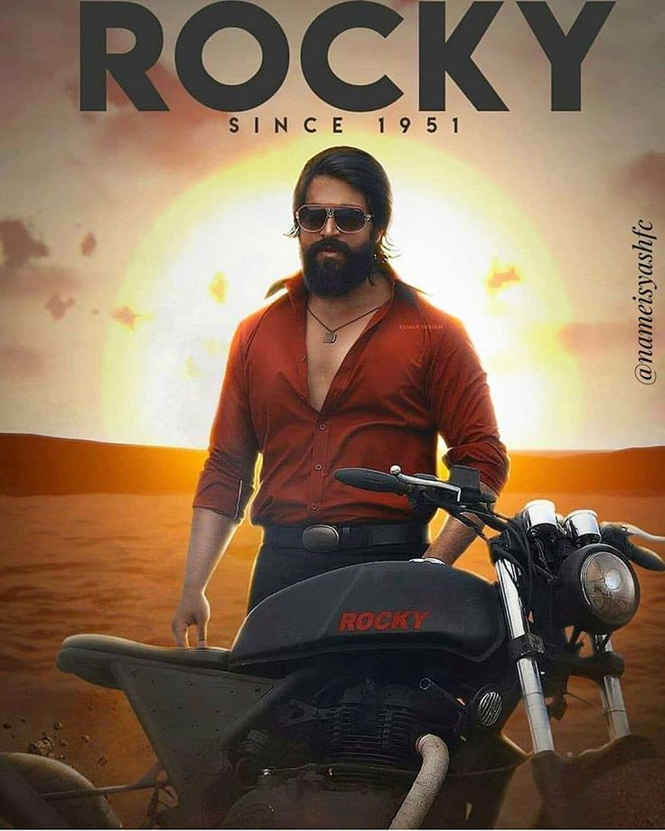
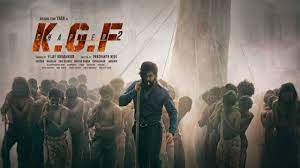

In the 1970s, a gangster named Rocky goes undercover as a slave to assassinate the owner of a notorious gold mine known as the Kolar Gold Fields.
The movie dates back to 1951. Here, two incidents take place; The birth of the hero and other in the Kolar Gold Fields (K.G.F) they get gold. The hero is brought up in poverty. When he is very young itself he goes to Mumbai to become a mafia don. His mother's wish was to see her son rich and powerful. After being in Mumbai for some time he returns back. Will he be able to become a Don? Will he set his people free from the age old slavery? Forms the plot of the movie?
Anand Ingalpai's book El Dorado has been banned by government but a journalist manages to get a copy and interviews him which details events of KGF (Kolar Gold Fields) between 1951 to 2018.In 1951 the government of India discovered ore in state of Mysore on the same day as Raja Krishnappa Bairya was born to a widow Shantamma.Suryavardhan a powerful don kills the officials and leases the land to run Limestone mine but establishes KGF with his associates Andrews,Desai,Bhargav,Guru Pandian and his brother Adheera who heads the security.After Suryavardhan suffers paralysis his son Garuda takes over KGF much to chagrin of Adheera.Suryavardhan's associates now eye KGF and want to kill him Raja now Rocky who came to Bombay as 10 year old boy kid and worked for gold smuggler Shetty has become one of the powerful person.Andrews offers Rocky to come to Bangalore to kill Garuda an in return whole of Bombay will be his.Rocky reaches Bangalore and meets Reena daughter of Desai he misbehaves with her and gets in tiff with Kamal (son of Bhargav) and his men causing huge damage Andrews and Desai don't action on this as only Rocky can kill Garuda.During a felicitation ceremony Rocky tries to assault Garuda but tight security permits him.Andrews and Desai believe that they have chosen the wrong person and want Rocky to return back to Bombay.But Rocky tells them that he is here to kill Garuda and will do it and the only way to kill him is by entering KGF.
Journalist Anand Ingalagi's (Anant Nag) book El-Dorado, that detailed events at the Kolar Gold Fields between 1951 and present day, has been banned by the Government of India and all published copies burnt. However, a television news channel procures a copy and interviews him circling the events.
Ingalagi narrates that an ore of gold was discovered, by mistake (when some farmers found a strange rock in their fields, by commissioned government officials in the southern part of India's Mysore State (in present-day Kolar district, Karnataka) in 1951. Raja Krishnappa "Rocky" Bairya (Yash) is also born on the day of the discovery in the Mysore region, to a poor and widowed woman. Discerning the increasing demand for gold by the Cold War between US and Russia, Suryavardhan (Ramesh Indira), one of the workers that accompanied the officials kills all the government officials (to keep the news of gold discovery secret), and deceitfully sets up a company, Narachi, in that land, bought for a lease of 99 years on the pretext of mining limestone. He has five associates, all of who operate away from KGF: Kamal (Vasishta N. Simha), the son of a former associate who converts ore into Gold; Rajendra Desai (Laxman), the father of Reena (Srinidhi Shetty), & Kamal's fiance who distributes Gold in Bangalore; Andrews (B. S. Avinash), who oversees operations in the Konkan and Malabar Coasts; Guru Pandian (Achyuth Kumar), a powerful politician and president of the DYSS party who provided political cover to Suryavardhan; and Suryavardhan's brother Adheera, who was his enforcer. However, each of them have their eyes on the mines. Andrews' under-boss Shetty (Dinesh Mangaluru) is a gold smuggler in Bombay, the city that also has another smuggler, Dubai-based Inayat Khalil's (Balakrishna) eyes set on. Shetty and Inayat frequently contest the leadership of gold smuggling in Bombay.
Rocky arrives in Bombay as a ten-year-old on a quest for power (as Rocky understood that money comes from power and powerful people come from powerful places) and wealth as desired by his dying mother (by lung cancer at the age of 25) and begins to work for Shetty. He becomes Shetty's henchman later and oversees the arrival of gold bars from Africa to the Bombay coast with an iron fist, and soon rises in strength and power rivaling that of Shetty's. Then Suryavardhan has a heart attack and for the first time in many years, the ownership and riches from KGF are up for grabs. Inayat sees this as an opportunity to eliminate Shetty and take over Bombay, but Rocky stops Inayat all by himself by beating up his entire army and seizing his boats from Dubai who were delivering gold to Bombay. Shetty is afraid that Rocky is beating him in the popularity contest. The news of Rocky reaches Andrews.
Andrews offers Rocky Bombay in return for assassinating Garuda (Ramachandra Raju), the elder son of Suryavardhan, who was seen to inherit KGF after his paralyzed father's passing. Rocky accepts the offer and heads to Bangalore where an event is staged for the purpose (Garuda is to come to DYSS party office for the naming of the new Chief Minister of the state, which is Gurupandiyan). Rocky is scheduled to assassinate Garuda then). Upon reaching Bangalore Rocky comes against Reena and is smitten by her. Kamal is angry about someone hitting on Reena, but Andrews protects Rocky's identity till his mission is completed. Kamal has his entire goon army looking out for Rocky and eventually finds him. But Kamal is stopped by Andrews and Rajendra Desai who tell Kamal that Rocky is the weapon to kill Garuda. Rocky discusses his plan to kill Garuda in the DYSS party office (as every other route is heavily protected by Gaurda's men, who are determined to protect their boss outside his fortress in KGF). When Garuda arrives, Rocky witnesses the authority and power of goons that Garuda commands and has the attempt averted. Garuda had been lured to the event, for the unveiling of his father's statue, but when the statue is revealed, it is not of Suryavardhan, but of Garuda. This implies that Garuda knew everything that had been planned against him. In addition Rocky realizes the gold he is smuggling in Bombay, doesn't come from Africa, but from KGF, which is controlled by Garuda. He found the marked trucks from Bombay in Bangalore, and tracked them down to figure out the mystery.
Rocky now volunteers to go into KGF to kill Garuda as he wants complete control over the gold trade. In 1978, at the KGF, a bedridden Suryavardhan announces Garuda as his successor overlooking Adheera, who he wants to serve as the latter's aide. Adheera orders an attack on Garuda, but misses and Garuda retaliates and doesn't miss. Adheera is presumably dead. Garuda's ruthless way of functioning aided by his commander Vanaram (Ayyappa P. Sharma) comes to fore. 400 guards rule a slave army of 20000 men. Meanwhile Rajendra and Suryavardhan are both worried that Inayat still has his eyes on the Mumbai gold trade and he is supported by Ramika Sen, who is a politician and supports Inayat. She is fighting the national elections in upcoming polls and together they can destroy KGF and everyone linked to it.
Andrews and Rajendra see the need to enter KGF and eliminate Garuda before he becomes all powerful. Rocky soon makes his way into KGF evading a unit of Garuda's henchmen and starts working in the mines like an ordinary laborer. Once there, he witnesses the brutality that the slaves are subjected to. Although apathetic at first, he is moved by a couple of incidents involving a cold-blooded killing of a mother and son at the hands of an overseer and the slaves' children hoping that he rises to liberate them. Rocky infiltrates the map room to get a pull picture of the mines and the security in it. But Garuda gets a whiff of the infiltration and decides to kill the entire last batch of slaves, which included Rocky. A fellow slave (who had seen Rocky and believed in him), sacrifices himself to save Rocky. News reaches Andrews that their man in KGF has been killed. Beginning his attempt at it and to indicate to Desai and his men through informants, Kulkarni and Garuda's virtuous brother Virat (Vinay Bidappa), that he was alive, as planned, Rocky engages in a fight with a unit of twenty-one overseers killing each one of them in order to save a blind slave they were about to kill.
With the act, Rocky emerges as a hero in the slaves' eyes. An alerted Vanaram now informs Garuda who heads toward the mines from his palatial residence. To avert thousands of slaves being killed due to his fury, Virat (Garuda's brother who has returned from London) smothers father Suryavardhan to death and sidetracks Garuda, who rushes back home. At the mines, Rocky seizes the opportunity, conspires and unsuspectingly heads through a tunnel to the site where Garuda has decided to behead three slaves as offerings to a deity. Upon Garuda's return to the site and sacrifice of two slaves, a concealed Rocky emerges and beheads him. The ecstatic slaves accept him as their leader as they cheer him on. The narrator concludes that Rocky intentionally chose KGF as the site to assassinate Garuda, in order to earn the will of an "army of people", the slaves, before he seized KGF to his control. He adds that Prime Minister Ramika Sen later ordered the Indian Army to have Rocky, by then who was labeled as "India's biggest criminal", killed.
|  |  |  | |